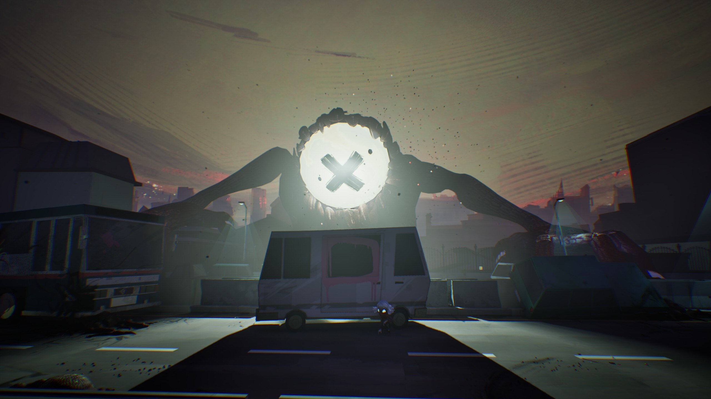
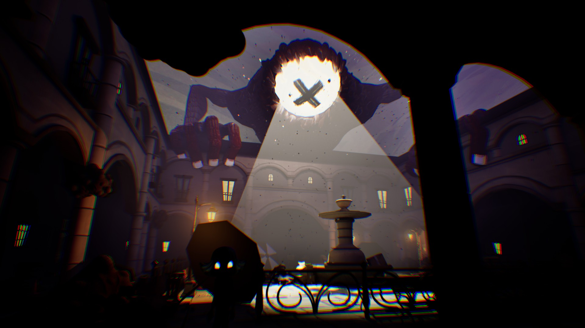
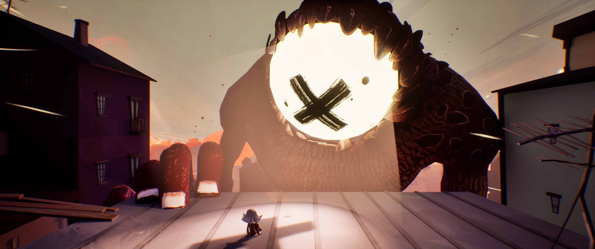

About the game
Numbra is a third-person 3D action-adventure game with stealth, puzzles and exploration elements.
In a desolate and ominous world, a young girl faces dark creatures that lurk in every shadow. With each step, the danger grows. But there is only one rule: stay awake.
During the project, I worked on core player mechanics such as movement, jumping, and general character control, focusing on making them feel responsive and consistent.
I also handled the animation system, connecting animations with gameplay and ensuring smooth transitions between states so that character behaviour felt natural during gameplay. Part of this work involved fixing issues with root motion animations, which were not working correctly at first. This allowed us to keep a gameplay mechanic that we were close to removing.
I worked closely with artists on animation-related tasks, coordinating on skeleton setups and discussing additional animations needed to improve the overall feel of the character.
Alongside the programming work, I also contributed to design decisions related to player behaviour and controls.